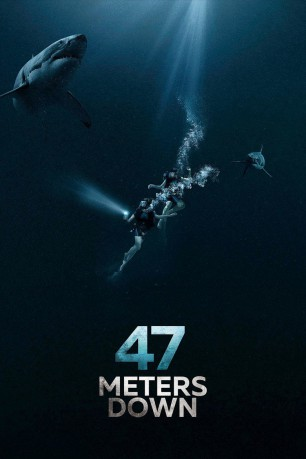

#7601 47 Meters Down
 
 IMDB-Wertung: 5.6 / 10
IMDB-Wertung: 5.6 / 10  Tomatometer: 53
Tomatometer: 53  Metascore: 52
Metascore: 52 
Eigentlich wollten die zwei Schwestern Lisa (Mandy Moore) und Kate (Claire Holt) während ihres Mexiko-Urlaubs aus einem Käfig heraus Haie beobachten, doch die Expedition geht schief: Das Kabel, das den Beobachtungskäfig mit dem Boot verbindet, reißt plötzlich und der Käfig, in dem die beiden Frauen sich befinden, sinkt auf den Meeresgrund. Die beiden Schwestern müssen um ihr Überleben kämpfen, denn der Sauerstoff ist bald aufgebraucht. Doch wie sollen sie sicher die Wasseroberfläche erreichen, wenn der Ozean nur so vor Haien wimmelt?
Jahr: 2017
Dauer: 97 Minuten
FSK: 12
Land: England Studio: BM CulturesTonspuren: DTS - ,
Untertitel:
Auflösung: 1080p (1920x808) Größe: 7372 MB
Genre: Thriller, Horror, Drama, Abenteuer
Regisseur: Johannes Roberts
Drehbuch: Johannes Roberts
Soundtrack:
Darsteller:
 Mandy Moore als Lisa
Mandy Moore als Lisa- Claire Holt als Kate
- Chris Johnson als Javier
- Yani Gellman als Louis
- Santiago Segura als Benjamin
 Matthew Modine als Captain Taylor
Matthew Modine als Captain Taylor- Mayra Juarez als Sammie , uncredited
- Axel Mansilla als Band Leader , uncredited
Datei: X:\2017(A-F)\47 Meters Down (2017, FSK12, 1920x808).mkv seit 23.11.2017
Festplatte: HD 2017(A-Z)-2018(A-F)
 Es gibt insgesamt 152 Filme in der Gruppe '2017(A-F)'
Es gibt insgesamt 152 Filme in der Gruppe '2017(A-F)'